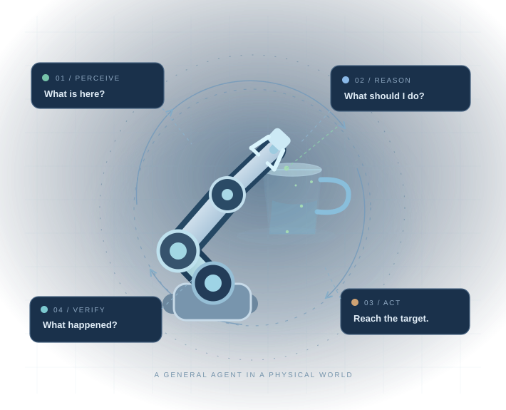
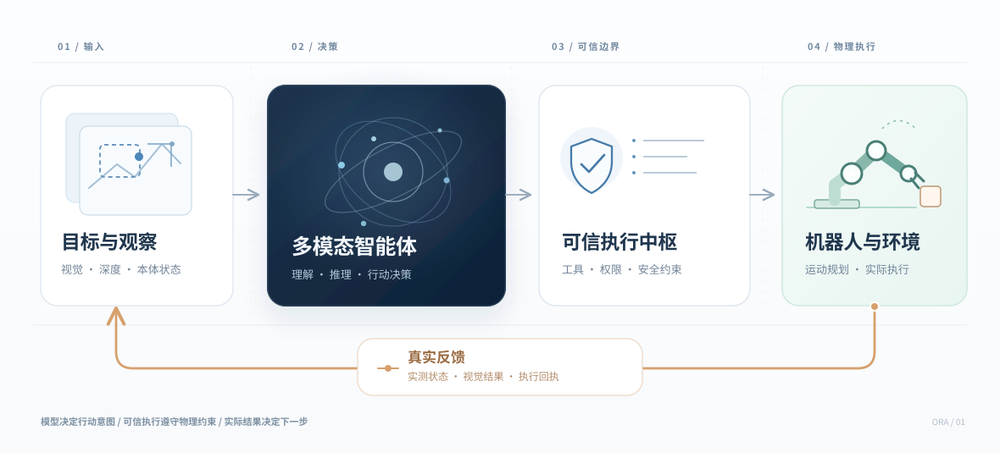
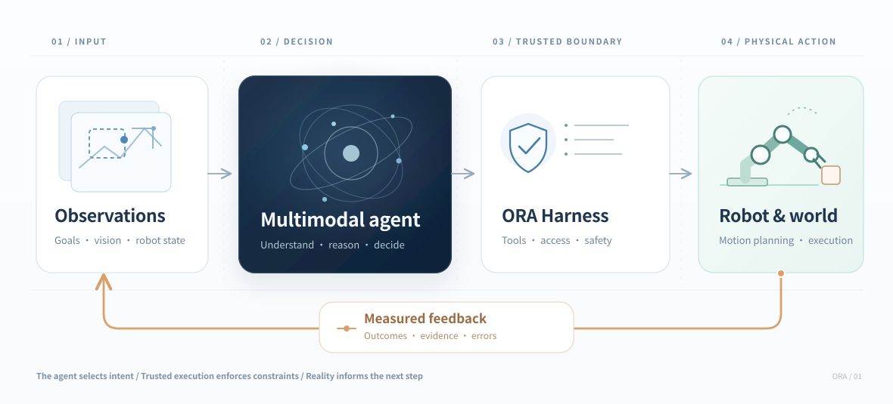

同一个智能体One general agent
联合理解目标、空间、操作与物理变化。Unite goal understanding, spatial reasoning, manipulation, and prediction.
开放研究计划 · 通用具身智能AN OPEN RESEARCH INITIATIVE · EMBODIED AI
从会推理、会使用软件工具的 Agent，走向能够理解环境、选择物理行动并从真实交互中持续学习的 Robot Agent。From agents that reason and use digital tools to agents that understand the physical world, take action, and learn from real interactions.
研究进行中 · 公开主页展示愿景与可分享进展Research in progress · A public overview

01 / VISION
真正的 Robot Agent 应该理解：要操作哪个物体、为什么选择这种操作、执行后会发生什么。我们希望把通用 Agent 的推理能力带入真实世界。A robot agent should know what to act on, why an interaction makes sense, and what might happen next. Our goal is to bring general agent intelligence into the physical world.
联合理解目标、空间、操作与物理变化。Unite goal understanding, spatial reasoning, manipulation, and prediction.
模型制定意图；几何、路径规划与安全由可信系统处理。The agent sets intent; trusted components manage geometry, control, and safety.
任务完成依赖可观察结果，而不是模型的自我声明。Outcomes are observed and checked, not assumed from model statements.
02 / CAPABILITIES
一棵能力树：通用智能是底座，六类具身能力面向物理世界。点击任一分支，查看必要的子能力。One capability tree: general intelligence as the foundation, with six branches of embodied skills. Open a branch to see the underlying abilities.
Object Grounding确定正确的物体实例Find the intended object
2D / 3D Grounding像素位置、深度与空间关系Pixels, depth, and spatial relations
State Tracking跨时间与视角追踪状态Track state across time and views
Affordance Grounding发现可抓、可推、可托的部位Find graspable, pushable, and supportable regions
Affordance Selection为当前任务选择合适的接触位置Choose task-appropriate contact points
Manipulation Strategy夹持、托举、推拉与双手协作Grasp, cradle, push, pull, and coordinate both hands
Tool Selection判断需要什么实体工具Choose the right physical tool
Functional Parts区分握持端与工作端Identify grip and working ends
Tool-Use Planning通过工具改变另一个物体的状态Change the world through the tool
Contact Reasoning物性、摩擦、受力和接触Materials, friction, force, and contact
Future Prediction预测动作后的真实世界状态Predict action-conditioned world states
Risk & Uncertainty识别未知、风险和失败可能Recognize uncertainty and risks
Embodiment Selection选择机器人、手臂或移动相机Choose robot, arm, or movable camera
Goal & Constraints表达目标与执行约束Specify targets and constraints
Action Abstraction局部增量或目标级行动Local deltas or goal-directed action
Active Perception主动观察、改变视角Observe actively and change viewpoints
Outcome Verification通过真实证据核对目标Verify outcomes with actual evidence
Diagnosis & Recovery分析偏差、修正或停止Diagnose, recover, or stop
能力是长期研究目标，不等于已经实现六个工具，也不是六次固定推理步骤。These are long-term learning goals, not six tools, separate models, or fixed reasoning stages.
03 / ARCHITECTURE
模型负责理解和决策，Harness 管理可信状态与工具，执行器负责运动与安全。物理结果回到下一轮决策。The model reasons; the harness mediates trusted state and tools; the robot executes under safety constraints. Physical outcomes inform the next decision.


受限的局部运动增量，适合短程行动与精细微调。Bounded local deltas for short actions and fine adjustments.
有界运动增量 · 概念BOUNDED DELTAS · CONCEPT描述要达到的物理目标，由可信系统规划、执行并核对。Specify a physical target for trusted planning, execution, and checking.
物理目标 · 概念PHYSICAL TARGETS · CONCEPT上图用于解释研究方向，并非已上线的功能说明。网站不展示未发表的具体工具协议或实现细节。This diagram describes a research direction, not deployed functionality. Unpublished tool protocols and implementation details are not included.
04 / RESEARCH ROADMAP
路线图表达方向，不是已完成成果列表。先让交互可信，再探索如何从物理经验中学习。A research direction, not a list of completed results. First establish trustworthy interaction, then learn from it.
探索如何组织多模态观测、模型决策和安全物理执行，形成可审计的闭环。Study the organization of multimodal observations, model decisions, and trusted execution in an auditable loop.
保留物理观测、行动和真实结果，积累有依据的交互经验。Capture grounded observations, actions, and outcomes as verifiable experience.
探索把空间推理、操作判断和物理经验转化为更高效的模型能力。Explore how physical reasoning and interaction experience can improve model capabilities.
面向不同机器人和真实任务，探索持续、安全、成本可控的通用智能。Explore safe, sustained, and efficient intelligence across embodiments and tasks.
05 / PROGRESS
ORA 是持续演进中的研究原型。公开页面不会展示未经核实的性能、未发表的方法或私人实验细节。ORA is an evolving research prototype. This public page does not publish unverified performance claims, unpublished methods, or private experiments.